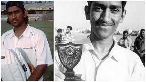
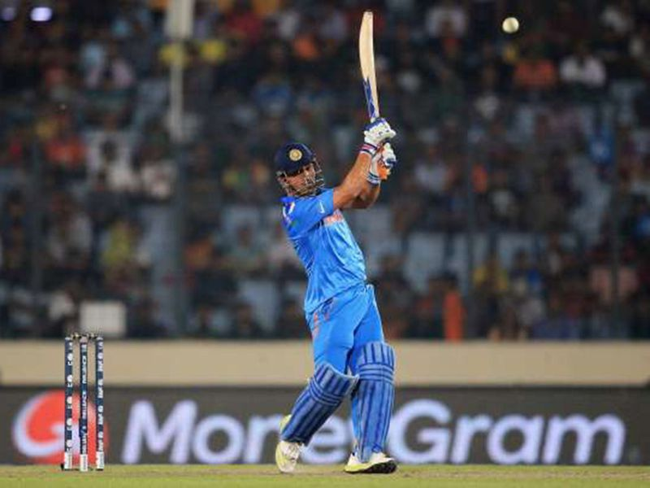
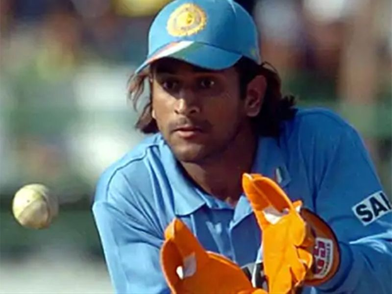
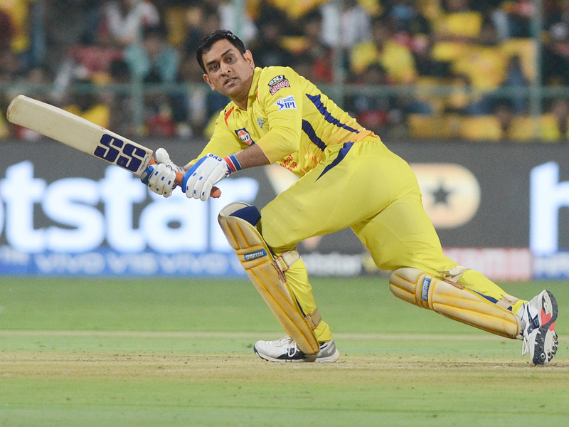
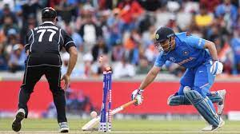
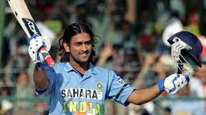

EARLY CAREER
JUNIOR CRICKET IN BIHAR
In 1998, Dhoni was selected by Deval Sahay to play for the Central Coal Fields Limited (CCL) team. Till 1998 Dhoni, who was in class 12th in school, had played only school cricket and club cricket and no professional cricket. One of the famous episodes, when Dhoni used to play for CCL, was when Deval Sahay used to gift him Rs 50 for each six that he hit in Sheesh Mahal tournament cricket matches.Playing for CCL, he got a chance to bat up the order. He grabbed the opportunity and scored centuries and helped CCL move to the A division.Deval Sahay impressed by his hard-hitting shots and dedication, used his contacts in Bihar Cricket Association to push for his selection in the Bihar team.Deval Sahay, an ex Bihar Cricket Association Vice-President, was the Ranchi District Cricket President at that time and was instrumental in pushing Dhoni to the big stage of Ranchi team, junior Bihar cricket team and eventually senior Bihar Ranji Team for the 1999–2000 season.  Within 1 year, Dhoni moved from playing in CCL to the Bihar Ranji team.Dhoni has credited Deval Sahay for instilling discipline in him.Dhoni was included in the Bihar U-19 squad for the 1998–99 season and scored 176 runs in 5 matches (7 innings) as the team finished fourth in the group of six and did not make it to the quarter-finals. Dhoni was not picked for the East Zone U-19 squad (CK Nayudu Trophy) or Rest of India squad (MA Chidambaram Trophy and Vinoo Mankad Trophy). Bihar U-19 cricket team advanced to the finals of 1999–2000 Cooch Behar Trophy, where Dhoni made 84 to help Bihar post a total of 357.Bihar's efforts were dwarfed by Punjab U-19s' 839 with Dhoni's future national squad teammate Yuvraj Singh making 358.Dhoni's contribution in the tournament included 488 runs (9 matches, 12 innings), 5 fifties, 17 catches and 7 stumpings.Dhoni made it to the East Zone U-19 squad for the CK Nayudu trophy but scored only 97 runs in four matches, as East Zone lost all four matches and finished last in the tournament.

BIHAR CRICKET TEAM
Dhoni made his Ranji Trophy debut for Bihar in the 1999–2000 season, as an eighteen-year-old. He made a half century in his debut match scoring 68* in the second innings against Assam cricket team. Dhoni finished the season with 283 runs in 5 matches. Dhoni scored his maiden first-class century while playing for Bihar against Bengal in the 2000/01 season, in a losing cause.Apart from this century, his performance in the 2000/01 season did not include another score over fifty and in the 2001/02 season, he scored just five fifties in four Ranji matches.
JHARKHAND CRICKET TEAM
Dhoni's performance in the 2002–03 season included three half-centuries in the Ranji Trophy and a couple of half-centuries in the Deodhar Trophy, as he started gaining recognition for his lower-order contribution as well as hard-hitting batting style. In the 2003/04 season, Dhoni scored a century (128*) against Assam in the first match of the Ranji ODI tournament. Dhoni was part of the East Zone squad that won the Deodhar Trophy 2003–2004 season and contributed with 244 runs in 4 matches,including a century (114) against Central zone.   In the Duleep Trophy finals, Dhoni was picked over international cricketer Deep Dasgupta to represent East Zone.He scored a fighting half-century in the second innings in a losing cause.Dhoni's talent was discovered via the BCCI's small-town talent-spotting initiative TRDW. Dhoni was discovered by TRDO Prakash Poddar, captain of Bengal in the 1960s, when he saw Dhoni play for Jharkhand at a match in Jamshedpur in 2003, and sent a report to the National Cricket Academy.
INDIA A TEAM
He was recognised for his efforts in the 2003/04 season, especially in the One Day format and was picked for the India A squad for a tour of Zimbabwe and Kenya.Against the Zimbabwe XI in Harare Sports Club, Dhoni had his best wicket-keeping effort with 7 catches and 4 stumpings in the match.In the tri-nation tournament involving Kenya, India A and Pakistan A, Dhoni helped India A chase down their target of 223 against Pakistan A with a half-century.Continuing his good performance, he scored back to back centuries – 120 and 119* – against the same team. Dhoni scored 362 runs in 6 innings at an average of 72.40 and his performance in the series received attention from the then Indian captain – Sourav Ganguly and Ravi Shastri, amongst others.
  